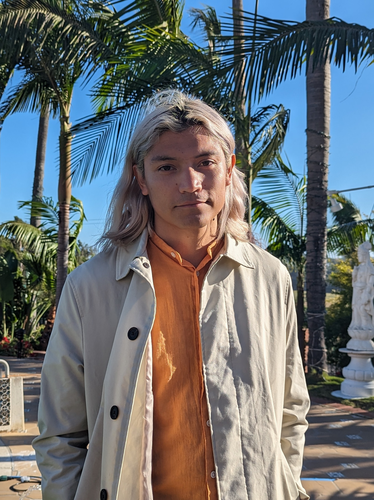

Victor Verde Neri
PhD Student in Sociology · UC San Diego
Hi, I'm Victor Verde Neri — a PhD student in Sociology at UC San Diego. I work at the intersection of political sociology, citizenship, and discourse. My research asks how power draws social boundaries: how states define who belongs, how individuals navigate those definitions, and how political movements perform and contest them. I focus on the United States and Mexico, with an interest in world-comparative frameworks.
My current projects examine two sides of this problem. The first draws on 52 interviews with second- and third-generation Mexican Americans applying for Mexican citizenship, exploring how racialized insecurity and eroding political belonging in the U.S. drive the pursuit of dual nationality. The second uses computational text analysis of over 10 million words from President López Obrador's press conferences to map how left-wing populism constructs its antagonists in discourse.
My training spans psychology, philosophy, and sociology. I work with in-depth interviews, historical-comparative methods, discourse analysis, and computational text analysis including transformer-based embeddings.
